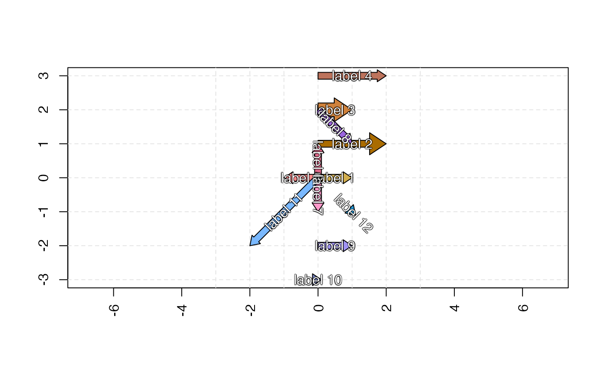

R/jam_plot_sedesign.R
make_block_arrow_polygon.RdMake block arrow polygon coordinates for line segments
make_block_arrow_polygon(
x,
y,
x1 = NULL,
y1 = NULL,
reference = "last",
data_format = c("grid", "base", "list"),
arrow_ex = 1,
head_ex = 1,
arrow_w = 0.1 * arrow_ex,
head_w = arrow_w * 0.75 * head_ex,
head_l = (head_w + arrow_w) * 1.5,
color = NA,
border = NA,
gradient_n = 15,
verbose = FALSE,
...
)numeric vector with the start value for each line segment,
or when x1=NULL then x must contain two values per line segment.
numeric vector with the start value for each line segment,
or when y1=NULL then y must contain two values per line segment.
numeric with the end value for each line segment.
numeric with the end value for each line segment.
character string indicating which point is the
reference when the arrow head is longer than the line segment.
"last" (default) fixes the last point in the line to the
point of the block arrow head, so the arrow base (stem) will
extend past the first point in the line.
"first" fixes the first point in the line to the end
of the arrow stem, so the arrow head will extend beyond the
final point in the line.
character string indicating the data format to
return, based upon the type of plot used in subsequent steps:
"grid" (default) returns a list with x, y, and id,
usable with grid::grid.polygon(x, y, id) to plot multiple
polygons in vectorized form.
"base" returns a list with x and y values, where each
vector contains NA values to separate each polygon, usable
with graphics::polygon(x, y) for vectorized plotting.
"list" returns a list where x is a list separated by
each polygon, and y is a list separated by each polygon.
One would iterate the coordinate lists to plot the polygons.
numeric expansion factor applied to the arrow width,
and by default to the arrow head, relative to the arrow width.
numeric expansion factor applied to the arrow head,
by default applied relative to the arrow width.
numeric width for the arrow stem, actually the half-width
since the width is applied to each side perpendicular to the line.
numeric head width, added to arrow_w for each side
of the arrow.
numeric head length, a fixed distance from the end of
the line described between x,y points.
additional arguments are ignored.
This function defines a block arrow defined by line segments.
The block arrow is defined with a fixed arrow head size, in order to preserve the aspect ratio for the arrow head. The arrow stem is extended to the length of the line segment, unless the arrow head itself is larger than the line segment in which case only the arrow head is shown.
The overall arrow size can be adjusted with arrow_ex,
which adjusts the arrow stem width and the arrow head
proportionally.
The size of the arrow head relative to the arrow stem width
can be adjusted with head_ex.
When any line segments have zero width, the final point in the line
segment is shifted 0.1 to create a small horizontal
line segment with length 0.1.
TODO: Prepare list of polygons for gradient color fill.
Optionally return a list of polygons usable to render gradient
color fill along the arrow stem, with final color on the arrow head.
The list should include color and border for each polygon, so the border
is used to fill the tiny "gap" between adjacent polygons, to prevent
visual artifacts.
The final element in the list should be the full arrow, with NA color,
and proper border to be drawn atop the series of gradient colors.
Note: Unfortunately even grid::grid.rect() used with
grid::linearGradient() is unable to fill this purpose,
since it is not available for quartz() and windows() devices,
and only works properly with a subset of graphics devices such as
PDF, SVG, PNG, etc. That said, it would otherwise be the preferred
approach, along with the vwline variable grid line package.
arrow_coords <- matrix(ncol=4, byrow=TRUE, c(
0, 0, 1, 0,
0, 1, 2, 1,
0, 2, 1, 2,
0, 3, 2, 3,
0, 0, -1, 0,
0, 0, 0, 1,
0, 0, 0, -1,
0, 2, 1, 1,
0, -2, 1, -2,
0, -3, 0, -3,
0, 0, -2, -2,
1, -1, 1.1, -1.1))
x <- arrow_coords[,1];
y <- arrow_coords[,2];
x1 <- arrow_coords[,3];
y1 <- arrow_coords[,4];
colorset <- colorjam::rainbowJam(nrow(arrow_coords), Crange=c(60, 90), Lrange=c(46, 80));
jamba::nullPlot(xlim=c(-3, 3), ylim=c(-3, 3), asp=1, doBoxes=FALSE);
axis(1, las=2); axis(2);
box();
abline(h=-3:3, v=-3:3, col="grey90", lty=2)
k <- seq_len(nrow(arrow_coords));
arrowxy <- make_block_arrow_polygon(
x=x[k], y=y[k],
x1=x1[k], y1=y1[k],
head_ex=rep(c(1, 3, 1), c(1, 1, 9)),
arrow_ex=rep(c(1, 2, 1), c(2, 1, 8)),
data_format="base")
#> Warning: longer object length is not a multiple of shorter object length
polygon(x=arrowxy$x, y=arrowxy$y,
col=colorset[k])
for (i in k) {
irad <- atan2(y=(y1 - y)[i], x=(x1 - x)[i]);
iangle <- ((jamba::rad2deg(irad) + 90) %% 180 - 90) %% 360;
jamba::shadowText(x=(x + x1)[i] / 2,
y=(y + y1)[i] / 2,
col="white",
srt=attr(arrowxy, "text_angle")[i],
label=paste0("label ", i))
}
